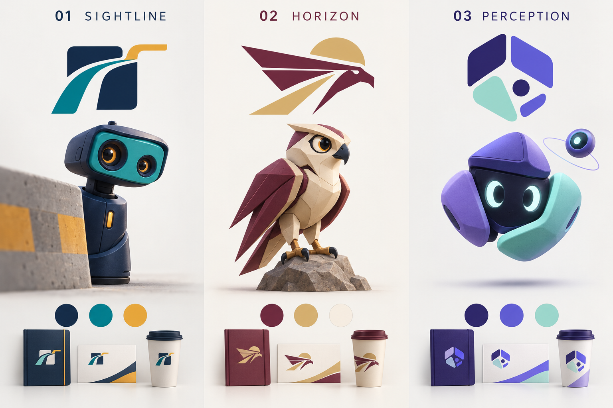

ترشيحي الأول · مسودة
خط الرؤية
Sightlineفكرة الشعار
مسار ينكشف من وراء كتلة محجوبة؛ العلامة تربط موضوع الطريق بما يفعله المشروع فعلًا.
التميمة: راصد
دليل استشعار صغير يطل من خلف حاجز؛ عينان غير متماثلتين تمثلان زاويتَي رصد. شخصية يقظة وهادئة قابلة للتحويل إلى مجسم.
وضعيات مقترحة: يرصد من خلف حاجز، يشرح اتجاهي الرؤية، يعرض دليل التجربة.
لماذا نختاره؟
الأوضح للجنة التحكيم، والأكثر اتساقًا بين لوحة التشغيل والتقرير والمجسم.
ما يحتاج ضبطًا: التميمة تحتاج تبسيطًا عند الأحجام الصغيرة؛ نستخدم رمز الشعار وحده للأيقونة.
رؤية تتجاوز العائق.
تُعرض المشاهدات مع مصدرها وتوقيتها وسبب التنبيه.
Evidence, clarity and coordinated perception.
- العربية
- IBM Plex Sans Arabic
- English
- IBM Plex Sans
تباين النص الأساسي مع الخلفية: 12.9:1، فحص حسابي لهذه الثنائية فقط.
#142D4E#007F82#F4B544#F4F7FBاتجاه بديل · مسودة
الأفق
Horizonفكرة الشعار
جناح وخط أفق ومسار صاعد في علامة واحدة، بحضور عربي ومظهر مؤسسي.
التميمة: شاهين
صقر مراقب بأسلوب هندسي، جناحان عنابيان وجسم رملي؛ حضور وقور مناسب للمعرض والمطبوعات.
وضعيات مقترحة: يراقب الأفق، يشير إلى مصدر رصد، يقدم النتيجة.
لماذا نختاره؟
الأقوى للمطبوعات والمنصة المعروضة رسميًا والملصق العلمي.
ما يحتاج ضبطًا: صلة الصقر بالخطر المحجوب أقل مباشرة، وقد يبدو رمزًا عامًا دون قصة المشروع. ليس شعار جهة رسمية.
رؤية تتجاوز العائق.
تُعرض المشاهدات مع مصدرها وتوقيتها وسبب التنبيه.
Evidence, clarity and coordinated perception.
- العربية
- Noto Kufi Arabic
- English
- Manrope
تباين النص الأساسي مع الخلفية: 13.41:1، فحص حسابي لهذه الثنائية فقط.
#672A46#D8B778#946022#FAF7F0اتجاه بديل · مسودة
شبكة الإدراك
Perceptionفكرة الشعار
وحدات هندسية تصنع فتحة رؤية مشتركة؛ كل مصدر يكمل ما لا يراه الآخر.
التميمة: وصل
شخصية من وحدات استشعار متصلة، تلتف حول وجه بسيط مع عقدة رصد جانبية؛ تعبّر عن دمج المصادر والتعاون.
وضعيات مقترحة: يجمع مشاهدتين، يكشف المنطقة المحجوبة، يوضح ثقة البيانات.
لماذا نختاره؟
الأقوى لواجهات التقنية والرسوم المتحركة وشرح دمج البيانات.
ما يحتاج ضبطًا: يتطلب ضبط المؤثرات حتى لا يغلب الطابع المرح على العرض العلمي.
رؤية تتجاوز العائق.
تُعرض المشاهدات مع مصدرها وتوقيتها وسبب التنبيه.
Evidence, clarity and coordinated perception.
- العربية
- Readex Pro
- English
- Readex Pro
تباين النص الأساسي مع الخلفية: 14.16:1، فحص حسابي لهذه الثنائية فقط.
#342D70#6259D8#A6E4D5#F6F5FCهوية مركزية قابلة للتطبيق
الرسم المتجهي المعروض صياغة مبسطة أولية، ولا يطابق بالضرورة تفاصيل اللوحة المولدة. بعد اختيار الاتجاه نضبط الشعار والتميمة ونجهز نسخ اللون الواحد والأحجام الصغيرة والخلفيات الداكنة.
- قيم الألوان والخطوط في directions.json، ويجمع tokens.css القيم المركزية لكل مقترح؛ review.css خاص بتنسيق صفحة المراجعة.
- لا توجد هوية معتمدة بعد، ولا يختار فتح الصفحة أحد المقترحات تلقائيًا.
- معاني الخطر وفقد البيانات والنجاح لها رموز ونصوص وألوان دلالية مستقلة؛ التميمة لا تستبدل التنبيه.
- الخطوط هنا ملفات محلية فعلية، مع حفظ تراخيص OFL ومصدر كل ملف وبصمته؛ لا يعتمد عرض العينات على اتصال بخادم خطوط.
- رموز HEX تخص الشاشة. مطابقة CMYK والطباعة تعتمد ملف ICC وعينة المطبعة؛ لم تعتمد قيم طباعة بعد.
- المقترحات ليست نتيجة بحث تشابه علامات أو تصريحًا قانونيًا بالاستخدام الحصري.

المهارات: جرد فعلي وقاعدة سجل
124 ملف مهارة محلي
123 محتوى مميز بالبصمة
4 مهارات تصميم مستخدمة
الوجود على القرص لا يثبت تفعيل الإضافة. حفظنا المصدر والإصدار وبصمة المحتوى والاستخدام والغرض والجلسة والمهمة والمخرجات؛ لا نعد الجرد اعتمادًا لكل مهارة.
بناء على اختيارك بدأنا نواة Django للسجل. نتائج الاستيراد والتحقق محفوظة في وثيقة التنفيذ؛ السجل محلي، ونشر Railway خطوة مستقلة.
حالة قاعدة البيانات ودليل التسجيل · مخطط توثيق الخدمات والهوية
إظهار جميع ملفات المهارات
| المهارة | المصدر | المسار النسبي | ملاحظة الجرد |
|---|---|---|---|
| imagegen" | codex_skills | .system/imagegen/SKILL.md | لم تُراجع تعليماته كاملة |
| openai-docs" | codex_skills | .system/openai-docs/SKILL.md | لم تُراجع تعليماته كاملة |
| review-agent | codex_skills | .system/review-agent/SKILL.md | لم تُراجع تعليماته كاملة |
| skill-creator | codex_skills | .system/skill-creator/SKILL.md | لم تُراجع تعليماته كاملة |
| skill-installer | codex_skills | .system/skill-installer/SKILL.md | لم تُراجع تعليماته كاملة |
| exact-count-and-zero-tables | codex_skills | exact-count-and-zero-tables/SKILL.md | لم تُراجع تعليماته كاملة |
| focused-testing | codex_skills | focused-testing/SKILL.md | لم تُراجع تعليماته كاملة |
| frontend-design | codex_skills | frontend-design/SKILL.md | لم تُراجع تعليماته كاملة |
| latex | codex_skills | latex/SKILL.md | لم تُراجع تعليماته كاملة |
| lean-formal-bridge | codex_skills | lean-formal-bridge/SKILL.md | لم تُراجع تعليماته كاملة |
| llmfit-advisor | codex_skills | llmfit-advisor/SKILL.md | لم تُراجع تعليماته كاملة |
| math-prof | codex_skills | math-prof/SKILL.md | لم تُراجع تعليماته كاملة |
| minimal-code-edit | codex_skills | minimal-code-edit/SKILL.md | لم تُراجع تعليماته كاملة |
| playwright" | codex_skills | playwright/SKILL.md | لم تُراجع تعليماته كاملة |
| targeted-debugging | codex_skills | targeted-debugging/SKILL.md | لم تُراجع تعليماته كاملة |
| ui-ux-pro-max | codex_skills | ui-ux-pro-max/SKILL.md | لم تُراجع تعليماته كاملة |
| accessibility | agent_skills | accessibility/SKILL.md | لم تُراجع تعليماته كاملة |
| azkia | agent_skills | azkia/SKILL.md | لم تُراجع تعليماته كاملة |
| find-skills | agent_skills | find-skills/SKILL.md | لم تُراجع تعليماته كاملة |
| fixing-accessibility | agent_skills | fixing-accessibility/SKILL.md | لم تُراجع تعليماته كاملة |
| frontend-design | agent_skills | frontend-design/SKILL.md | لم تُراجع تعليماته كاملة |
| math-prof | agent_skills | math-prof/SKILL.md | لم تُراجع تعليماته كاملة |
| source-command-code-review | agent_skills | source-command-code-review/SKILL.md | لم تُراجع تعليماته كاملة |
| ui-ux-pro-max | agent_skills | ui-ux-pro-max/SKILL.md | لم تُراجع تعليماته كاملة |
| web-design-guidelines | agent_skills | web-design-guidelines/SKILL.md | لم تُراجع تعليماته كاملة |
| trace-mascot-svg | plugin_cache | created-by-me-remote/trace-mascot-svg/0.1.0/skills/trace-mascot-svg/SKILL.md | لم تُراجع تعليماته كاملة |
| computer-use | plugin_cache | openai-bundled/computer-use/26.1027.30824/skills/computer-use/SKILL.md | لم تُراجع تعليماته كاملة |
| visualize | plugin_cache | openai-bundled/visualize/1.0.66/skills/visualize/SKILL.md | لم تُراجع تعليماته كاملة |
| cloud-environment-runtime | plugin_cache | openai-curated-remote/cloud-environment/0.1.2/skills/runtime/SKILL.md | لم تُراجع تعليماته كاملة |
| analyze-data-quality | plugin_cache | openai-curated-remote/data-analytics/1.1.0-exp-baseline/skills/analyze-data-quality/SKILL.md | لم تُراجع تعليماته كاملة |
| answers-follow-up | plugin_cache | openai-curated-remote/data-analytics/1.1.0-exp-baseline/skills/answers-follow-up/SKILL.md | لم تُراجع تعليماته كاملة |
| build-dashboard | plugin_cache | openai-curated-remote/data-analytics/1.1.0-exp-baseline/skills/build-dashboard/SKILL.md | لم تُراجع تعليماته كاملة |
| build-report | plugin_cache | openai-curated-remote/data-analytics/1.1.0-exp-baseline/skills/build-report/SKILL.md | لم تُراجع تعليماته كاملة |
| convert-to-doc | plugin_cache | openai-curated-remote/data-analytics/1.1.0-exp-baseline/skills/convert-to-doc/SKILL.md | لم تُراجع تعليماته كاملة |
| convert-to-slides | plugin_cache | openai-curated-remote/data-analytics/1.1.0-exp-baseline/skills/convert-to-slides/SKILL.md | لم تُراجع تعليماته كاملة |
| customize-data-plugin | plugin_cache | openai-curated-remote/data-analytics/1.1.0-exp-baseline/skills/customize-data-plugin/SKILL.md | لم تُراجع تعليماته كاملة |
| design-kpis | plugin_cache | openai-curated-remote/data-analytics/1.1.0-exp-baseline/skills/design-kpis/SKILL.md | لم تُراجع تعليماته كاملة |
| index | plugin_cache | openai-curated-remote/data-analytics/1.1.0-exp-baseline/skills/index/SKILL.md | لم تُراجع تعليماته كاملة |
| jupyter-notebooks | plugin_cache | openai-curated-remote/data-analytics/1.1.0-exp-baseline/skills/jupyter-notebooks/SKILL.md | لم تُراجع تعليماته كاملة |
| kpi-reporting | plugin_cache | openai-curated-remote/data-analytics/1.1.0-exp-baseline/skills/kpi-reporting/SKILL.md | لم تُراجع تعليماته كاملة |
| market-sizing | plugin_cache | openai-curated-remote/data-analytics/1.1.0-exp-baseline/skills/market-sizing/SKILL.md | لم تُراجع تعليماته كاملة |
| metric-diagnostics | plugin_cache | openai-curated-remote/data-analytics/1.1.0-exp-baseline/skills/metric-diagnostics/SKILL.md | لم تُراجع تعليماته كاملة |
| onboarding | plugin_cache | openai-curated-remote/data-analytics/1.1.0-exp-baseline/skills/onboarding/SKILL.md | لم تُراجع تعليماته كاملة |
| product-business-analysis | plugin_cache | openai-curated-remote/data-analytics/1.1.0-exp-baseline/skills/product-business-analysis/SKILL.md | لم تُراجع تعليماته كاملة |
| publish-artifact-to-sites | plugin_cache | openai-curated-remote/data-analytics/1.1.0-exp-baseline/skills/publish-artifact-to-sites/SKILL.md | لم تُراجع تعليماته كاملة |
| report-to-pdf | plugin_cache | openai-curated-remote/data-analytics/1.1.0-exp-baseline/skills/report-to-pdf/SKILL.md | لم تُراجع تعليماته كاملة |
| schedule-refresh-jobs | plugin_cache | openai-curated-remote/data-analytics/1.1.0-exp-baseline/skills/schedule-refresh-jobs/SKILL.md | لم تُراجع تعليماته كاملة |
| share-artifact-summary | plugin_cache | openai-curated-remote/data-analytics/1.1.0-exp-baseline/skills/share-artifact-summary/SKILL.md | لم تُراجع تعليماته كاملة |
| validate-data | plugin_cache | openai-curated-remote/data-analytics/1.1.0-exp-baseline/skills/validate-data/SKILL.md | لم تُراجع تعليماته كاملة |
| visualize-data | plugin_cache | openai-curated-remote/data-analytics/1.1.0-exp-baseline/skills/visualize-data/SKILL.md | لم تُراجع تعليماته كاملة |
| aidesigner-guide | plugin_cache | openai-curated-remote/logodesigner/1.2.0/skills/aidesigner-guide/SKILL.md | يتضمن تذييلًا تجاريًا |
| app-icon-favicon | plugin_cache | openai-curated-remote/logodesigner/1.2.0/skills/app-icon-favicon/SKILL.md | يتضمن تذييلًا تجاريًا |
| brand-guidelines | plugin_cache | openai-curated-remote/logodesigner/1.2.0/skills/brand-guidelines/SKILL.md | يتضمن تذييلًا تجاريًا |
| brand-kit | plugin_cache | openai-curated-remote/logodesigner/1.2.0/skills/brand-kit/SKILL.md | يتضمن تذييلًا تجاريًا |
| brand-name | plugin_cache | openai-curated-remote/logodesigner/1.2.0/skills/brand-name/SKILL.md | يتضمن تذييلًا تجاريًا |
| business-card | plugin_cache | openai-curated-remote/logodesigner/1.2.0/skills/business-card/SKILL.md | يتضمن تذييلًا تجاريًا |
| creator-gaming-logo | plugin_cache | openai-curated-remote/logodesigner/1.2.0/skills/creator-gaming-logo/SKILL.md | يتضمن تذييلًا تجاريًا |
| designer-client-kit | plugin_cache | openai-curated-remote/logodesigner/1.2.0/skills/designer-client-kit/SKILL.md | يتضمن تذييلًا تجاريًا |
| email-signature | plugin_cache | openai-curated-remote/logodesigner/1.2.0/skills/email-signature/SKILL.md | يتضمن تذييلًا تجاريًا |
| emblem-badge-logo | plugin_cache | openai-curated-remote/logodesigner/1.2.0/skills/emblem-badge-logo/SKILL.md | يتضمن تذييلًا تجاريًا |
| icon-symbol-logo | plugin_cache | openai-curated-remote/logodesigner/1.2.0/skills/icon-symbol-logo/SKILL.md | يتضمن تذييلًا تجاريًا |
| industry-logos | plugin_cache | openai-curated-remote/logodesigner/1.2.0/skills/industry-logos/SKILL.md | يتضمن تذييلًا تجاريًا |
| lettermark-monogram | plugin_cache | openai-curated-remote/logodesigner/1.2.0/skills/lettermark-monogram/SKILL.md | يتضمن تذييلًا تجاريًا |
| logo-animation | plugin_cache | openai-curated-remote/logodesigner/1.2.0/skills/logo-animation/SKILL.md | يتضمن تذييلًا تجاريًا |
| logo-brief | plugin_cache | openai-curated-remote/logodesigner/1.2.0/skills/logo-brief/SKILL.md | يتضمن تذييلًا تجاريًا |
| logo-colors | plugin_cache | openai-curated-remote/logodesigner/1.2.0/skills/logo-colors/SKILL.md | يتضمن تذييلًا تجاريًا |
| logo-concepts | plugin_cache | openai-curated-remote/logodesigner/1.2.0/skills/logo-concepts/SKILL.md | يتضمن تذييلًا تجاريًا |
| logo-designer | plugin_cache | openai-curated-remote/logodesigner/1.2.0/skills/logo-designer/SKILL.md | يتضمن تذييلًا تجاريًا |
| logo-file-formats | plugin_cache | openai-curated-remote/logodesigner/1.2.0/skills/logo-file-formats/SKILL.md | يتضمن تذييلًا تجاريًا |
| logo-help | plugin_cache | openai-curated-remote/logodesigner/1.2.0/skills/logo-help/SKILL.md | يتضمن تذييلًا تجاريًا |
| logo-image-prompt | plugin_cache | openai-curated-remote/logodesigner/1.2.0/skills/logo-image-prompt/SKILL.md | يتضمن تذييلًا تجاريًا |
| logo-lockups | plugin_cache | openai-curated-remote/logodesigner/1.2.0/skills/logo-lockups/SKILL.md | يتضمن تذييلًا تجاريًا |
| logo-merch-packaging | plugin_cache | openai-curated-remote/logodesigner/1.2.0/skills/logo-merch-packaging/SKILL.md | يتضمن تذييلًا تجاريًا |
| logo-mockups | plugin_cache | openai-curated-remote/logodesigner/1.2.0/skills/logo-mockups/SKILL.md | يتضمن تذييلًا تجاريًا |
| logo-presentation | plugin_cache | openai-curated-remote/logodesigner/1.2.0/skills/logo-presentation/SKILL.md | يتضمن تذييلًا تجاريًا |
| logo-redesign | plugin_cache | openai-curated-remote/logodesigner/1.2.0/skills/logo-redesign/SKILL.md | يتضمن تذييلًا تجاريًا |
| logo-review | plugin_cache | openai-curated-remote/logodesigner/1.2.0/skills/logo-review/SKILL.md | يتضمن تذييلًا تجاريًا |
| logo-styles | plugin_cache | openai-curated-remote/logodesigner/1.2.0/skills/logo-styles/SKILL.md | يتضمن تذييلًا تجاريًا |
| logo-svg | plugin_cache | openai-curated-remote/logodesigner/1.2.0/skills/logo-svg/SKILL.md | يتضمن تذييلًا تجاريًا |
| logo-trademark-check | plugin_cache | openai-curated-remote/logodesigner/1.2.0/skills/logo-trademark-check/SKILL.md | يتضمن تذييلًا تجاريًا |
| logo-typography | plugin_cache | openai-curated-remote/logodesigner/1.2.0/skills/logo-typography/SKILL.md | يتضمن تذييلًا تجاريًا |
| logo-variations | plugin_cache | openai-curated-remote/logodesigner/1.2.0/skills/logo-variations/SKILL.md | يتضمن تذييلًا تجاريًا |
| mascot-logo | plugin_cache | openai-curated-remote/logodesigner/1.2.0/skills/mascot-logo/SKILL.md | يتضمن تذييلًا تجاريًا |
| recommended-tools | plugin_cache | openai-curated-remote/logodesigner/1.2.0/skills/recommended-tools/SKILL.md | يتضمن تذييلًا تجاريًا |
| social-media-branding | plugin_cache | openai-curated-remote/logodesigner/1.2.0/skills/social-media-branding/SKILL.md | يتضمن تذييلًا تجاريًا |
| tagline-slogan | plugin_cache | openai-curated-remote/logodesigner/1.2.0/skills/tagline-slogan/SKILL.md | يتضمن تذييلًا تجاريًا |
| wordmark-logo | plugin_cache | openai-curated-remote/logodesigner/1.2.0/skills/wordmark-logo/SKILL.md | يتضمن تذييلًا تجاريًا |
| artifact-template-analytics-dashboard | plugin_cache | openai-curated-remote/openai-templates/0.1.1/skills/artifact-template-analytics-dashboard/SKILL.md | لم تُراجع تعليماته كاملة |
| artifact-template-business-review | plugin_cache | openai-curated-remote/openai-templates/0.1.1/skills/artifact-template-business-review/SKILL.md | لم تُراجع تعليماته كاملة |
| artifact-template-design-report | plugin_cache | openai-curated-remote/openai-templates/0.1.1/skills/artifact-template-design-report/SKILL.md | لم تُراجع تعليماته كاملة |
| artifact-template-experiment-analysis | plugin_cache | openai-curated-remote/openai-templates/0.1.1/skills/artifact-template-experiment-analysis/SKILL.md | لم تُراجع تعليماته كاملة |
| artifact-template-financial-budget | plugin_cache | openai-curated-remote/openai-templates/0.1.1/skills/artifact-template-financial-budget/SKILL.md | لم تُراجع تعليماته كاملة |
| artifact-template-investment-committee-memo | plugin_cache | openai-curated-remote/openai-templates/0.1.1/skills/artifact-template-investment-committee-memo/SKILL.md | لم تُراجع تعليماته كاملة |
| artifact-template-legal-memorandum | plugin_cache | openai-curated-remote/openai-templates/0.1.1/skills/artifact-template-legal-memorandum/SKILL.md | لم تُراجع تعليماته كاملة |
| artifact-template-market-trends-report | plugin_cache | openai-curated-remote/openai-templates/0.1.1/skills/artifact-template-market-trends-report/SKILL.md | لم تُراجع تعليماته كاملة |
| artifact-template-minimal-letterhead | plugin_cache | openai-curated-remote/openai-templates/0.1.1/skills/artifact-template-minimal-letterhead/SKILL.md | لم تُراجع تعليماته كاملة |
| artifact-template-operating-calendar | plugin_cache | openai-curated-remote/openai-templates/0.1.1/skills/artifact-template-operating-calendar/SKILL.md | لم تُراجع تعليماته كاملة |
| artifact-template-operating-review | plugin_cache | openai-curated-remote/openai-templates/0.1.1/skills/artifact-template-operating-review/SKILL.md | لم تُراجع تعليماته كاملة |
| artifact-template-project-kickoff | plugin_cache | openai-curated-remote/openai-templates/0.1.1/skills/artifact-template-project-kickoff/SKILL.md | لم تُراجع تعليماته كاملة |
| artifact-template-project-tracker | plugin_cache | openai-curated-remote/openai-templates/0.1.1/skills/artifact-template-project-tracker/SKILL.md | لم تُراجع تعليماته كاملة |
| artifact-template-sales-pipeline | plugin_cache | openai-curated-remote/openai-templates/0.1.1/skills/artifact-template-sales-pipeline/SKILL.md | لم تُراجع تعليماته كاملة |
| artifact-template-simple-dark-mode | plugin_cache | openai-curated-remote/openai-templates/0.1.1/skills/artifact-template-simple-dark-mode/SKILL.md | لم تُراجع تعليماته كاملة |
| artifact-template-simple-light-mode | plugin_cache | openai-curated-remote/openai-templates/0.1.1/skills/artifact-template-simple-light-mode/SKILL.md | لم تُراجع تعليماته كاملة |
| artifact-template-strategy-memorandum | plugin_cache | openai-curated-remote/openai-templates/0.1.1/skills/artifact-template-strategy-memorandum/SKILL.md | لم تُراجع تعليماته كاملة |
| artifact-template-system-design | plugin_cache | openai-curated-remote/openai-templates/0.1.1/skills/artifact-template-system-design/SKILL.md | لم تُراجع تعليماته كاملة |
| artifact-template-team-alignment | plugin_cache | openai-curated-remote/openai-templates/0.1.1/skills/artifact-template-team-alignment/SKILL.md | لم تُراجع تعليماته كاملة |
| artifact-template-three-statement-forecast | plugin_cache | openai-curated-remote/openai-templates/0.1.1/skills/artifact-template-three-statement-forecast/SKILL.md | لم تُراجع تعليماته كاملة |
| maintain-space | plugin_cache | openai-curated-remote/pages/0.1.26/skills/maintain-space/SKILL.md | لم تُراجع تعليماته كاملة |
| manage-schedules | plugin_cache | openai-curated-remote/pages/0.1.26/skills/manage-schedules/SKILL.md | لم تُراجع تعليماته كاملة |
| organize-space | plugin_cache | openai-curated-remote/pages/0.1.26/skills/organize-space/SKILL.md | لم تُراجع تعليماته كاملة |
| write-page | plugin_cache | openai-curated-remote/pages/0.1.26/skills/write-page/SKILL.md | لم تُراجع تعليماته كاملة |
| plugin-management | plugin_cache | openai-curated-remote/plugin-management/0.1.0/skills/plugin-management/SKILL.md | لم تُراجع تعليماته كاملة |
| sites-remix | plugin_cache | openai-curated-remote/sites/1.1.2/skills/sites-remix/SKILL.md | لم تُراجع تعليماته كاملة |
| sites | plugin_cache | openai-curated-remote/sites/1.1.2/skills/sites/SKILL.md | لم تُراجع تعليماته كاملة |
| create-pet | plugin_cache | openai-curated-remote/work-pets/0.1.6/skills/create-pet/SKILL.md | لم تُراجع تعليماته كاملة |
| pets | plugin_cache | openai-curated-remote/work-pets/0.1.6/skills/pets/SKILL.md | لم تُراجع تعليماته كاملة |
| update-pet | plugin_cache | openai-curated-remote/work-pets/0.1.6/skills/update-pet/SKILL.md | لم تُراجع تعليماته كاملة |
| write-like-me | plugin_cache | openai-curated-remote/write-like-me/0.1.1/skills/write-like-me/SKILL.md | لم تُراجع تعليماته كاملة |
| documents | plugin_cache | openai-primary-runtime/documents/26.1026.10807/skills/documents/SKILL.md | لم تُراجع تعليماته كاملة |
| pdf" | plugin_cache | openai-primary-runtime/pdf/26.1026.10807/skills/pdf/SKILL.md | لم تُراجع تعليماته كاملة |
| Presentations | plugin_cache | openai-primary-runtime/presentations/26.1026.10807/skills/presentations/SKILL.md | لم تُراجع تعليماته كاملة |
| excel-live-control" | plugin_cache | openai-primary-runtime/spreadsheets/26.1026.10807/skills/excel-live-control/SKILL.md | لم تُراجع تعليماته كاملة |
| Spreadsheets" | plugin_cache | openai-primary-runtime/spreadsheets/26.1026.10807/skills/spreadsheets/SKILL.md | لم تُراجع تعليماته كاملة |
| template-creator | plugin_cache | openai-primary-runtime/template-creator/26.1026.10807/skills/template-creator/SKILL.md | لم تُراجع تعليماته كاملة |
الملفات المخبأة مصنفة كما هي؛ لم تُستدعَ كل المهارات ولم تتصل كل خدماتها. ملاحظات الاستخدام تخص المهمة الحالية فقط، ولا تدّعي إعادة بناء كامل التاريخ.